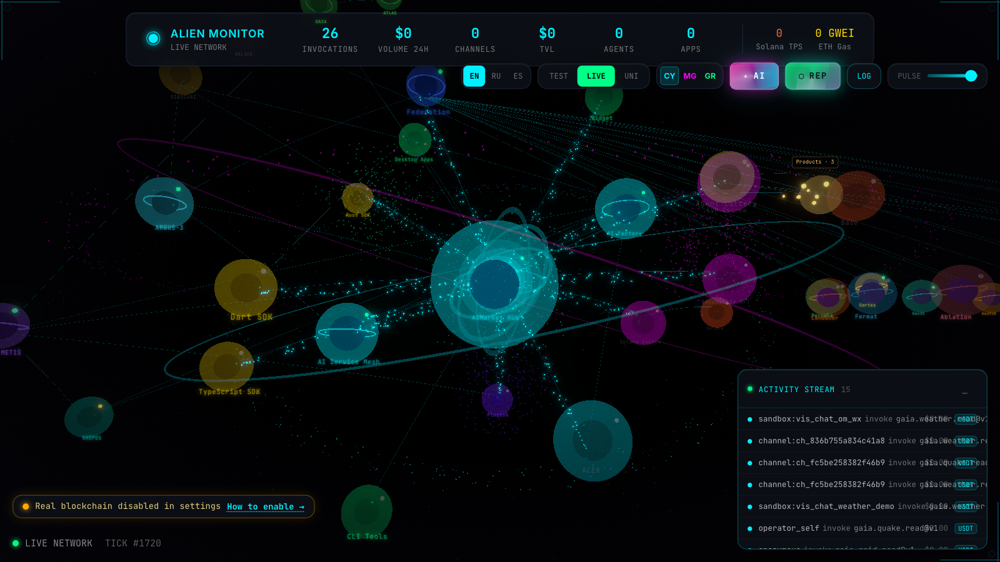

Developer path
Build on verified physical-world data
Understand the architecture, inspect live rails, choose a capability, and find the thin product layer you can build.
Verifiable provenance · agent economy
Live rails for source-attributed readings, pay-per-call agents, and focused products that preserve evidence boundaries.
Two ways to read the system
The same rails create developer leverage and investor optionality.
Developer path
Understand the architecture, inspect live rails, choose a capability, and find the thin product layer you can build.
Investor path
Connect the moat, live evidence, monetization rails, reusable infrastructure, and potential vertical products.
Proof in 60 seconds
One real weather reading. One signed envelope. One receipt. No account and no simulated success.
curl -sS https://iot.modelmarket.dev/ai-market/v2/invoke \
-H 'Content-Type: application/json' \
-d '{"capability_id":"gaia.weather.read@v1","input":{"device_id":"om-wx-01"}}'Ready. The button performs a real public demo invoke against GAIA.
THE OBJECT SURVIVES THIS TAB
The Hub committed to the accepted invoke with a canonical receipt URL. Anyone can retrieve the same bytes and check the issuer signature locally.
The check confirms who signed the invoke receipt and that it was not altered. It does not prove the physical reading is true.
One system, not separate projects
Each stage makes the next one possible; shared rails lower the cost of launching another vertical product.
Practical paths
One path. No monorepo tour. Finish in minutes.
For humans who want honesty on a map — not another dashboard.
Planetary glass. Pins are LIVE or SIM — never mixed without a badge.
Open ATLASOpen a focused ATLAS view, then inspect the callable watchbox product that evaluates a bbox and layers.
device_id, signature, seq — the receipt behind the glass.
Open GAIA fleetFor agents and apps that buy attested readings — pay-per-call.
Find gaia.weather.read@v1 (and air / energy). Price is micro.
Open HubPay-on-Verified: honest → pay · fault → refund · silence → $0.
GAIA liveBad data has an economic end. Keep the receipt for disputes.
See use casesFor providers: attested relays → GAIA capability → ATLAS LIVE pin.
Relay signs readings (Ed25519) with seq. You are a provider — not “plug USB and forget.”
Sensor pathUse the add-sensor guide when the kind already exists in GAIA. LIVE needs a provenance source.
Agents buy the invoke. Humans see the LIVE pin on ATLAS.
Publisher kit ideaFor builders shipping a thin entry product on attested rails.
Weather Risk Analyst first — then parametric, cold-chain, export API… Status chips are honest.
Build boardOpen Weather Risk — live Hub → GAIA → ATLAS path. Rails ship today; the product layer is what you build.
Open Weather Risk Engineering notesATLAS for humans · GAIA for readings · Hub for pay-per-call.
Live railsFor micro-investors and angels — orientation, not a prospectus.
Open ATLAS and GAIA before any slide. Rails are live.
Open ATLASApproximate adjacent markets + named sources. Disclaimer first.
Investor articleOpen ATLAS, GAIA, and Hub. Serious conversations follow from what already ships.
Back to sourcesLive today
Open any surface. Touch the economy. Crypto-optional.
Use cases
One job per card. Live link. No monorepo pitch.
NASA FIRMS thermal-anomaly detections plus bounded nearby LIVE weather context, source citations, limitations, and a receipt.
One bbox and layer set returns current matches, explicit LIVE/SIM flags, coverage boundaries, and a content receipt.
US NWS flood alerts plus river gauges in a bbox, hydrology pairing, citations, and a receipt. Not a flood model or parametric quote.

Humans get honesty on the map. Agents buy the reading behind the pin.
Open ATLAS
Pay-on-Verified: honest → pay · fault → refund · silence → $0.
Open Hub
Same rails. Different capabilities. Cinema of the fact, not a dashboard collage.
Open layersMoney moves when the attestation clears. Bad data has an economic end.
GAIA on GitHub
Factory + Monitor — demand agents and topology, not another chat UI.
Open Monitor
device_id, signature, seq — the discipline an insight product should keep.
Inspect fleetOpportunity map
A catalog of what developers could build and investors can evaluate. Status shows evidence maturity — not market size.
A product or callable surface operates now.
Shared rails exist; a focused application layer remains.
A third-party desk that already buys live SKUs — not a first-party product.
The path needs domain validation with a partner.
A possible application that still needs demand evidence.
Publish → read
Yes — as providers of attested relays, not “plug any USB and forget.”
Self-hosted (MIT) or use hosted surfaces. Demo fleet ≠ mass plug-and-play for every chip yet — the product path is clear.
For micro-investors & angels
Short narrative. Approximate market context. Sources named. Not a prospectus.
INTERACTIVE UNIT ECONOMICS
Change every assumption. This is a transparent model, not a revenue forecast.
Illustration before infrastructure, verification, support, tax, and acquisition costs. No forecast or promised return.
The system preserves who produced a result, from which source, under which checks. Agents can buy one capability call; payment eligibility follows the declared verification policy.
We already ship GAIA (attested IoT), Pay-on-Verified, ATLAS (LIVE vs SIM), Hub, oracles, and operator glass — live URLs above. Capital accelerates volume on those rails and thin entry products into verticals that already spend on physical-world data.
Incumbents sell forecasts and dashboards. Gaps we productize: per-reading attestation, agent-native micro-billing, economic end for bad data (refund / silence), and honest LIVE vs SIM for humans.
| Vertical | Approx. industry range | Our path (not claimed share) |
|---|---|---|
| Parametric insurance | ~$15–25B class mid-decade (varies widely by report) | Oracle input → threshold → partner payout |
| Supply-chain visibility / SCM | Visibility software ~low–mid $B; broader SCM tens of $B | Attested evidence streams · ATLAS wall |
| Energy / grid digital | Large fragmented (intensity, DR, metering) — treat as $10B+ opportunity class | energy.read / grid signals |
| Compliance / reporting tech | Broad GRC/ESG tooling often cited in tens of $B | Signed packs · export APIs |
| Prediction / event markets | Fast-moving; often cited ~$10B+ opportunity narratives | Physical resolution oracle |
These are input markets apps plug into — not our booked ARR.
Category ownership of agent-native physical oracle + settlement — with a map into insurance, supply chain, energy, compliance, and insight agents. We do not need to be the insurer on day one.
Diligence starts from the live rails and named sources on this page — not an offline pack.